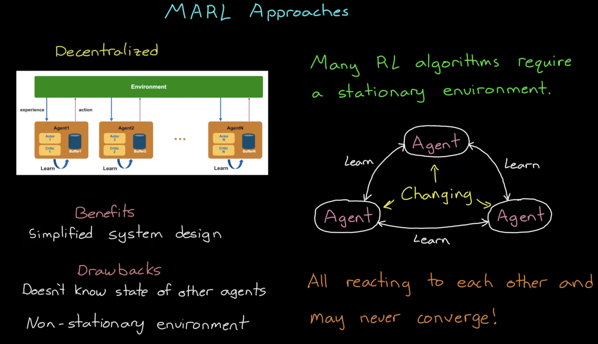
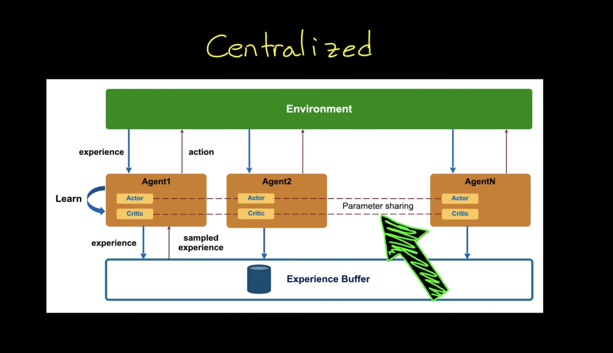
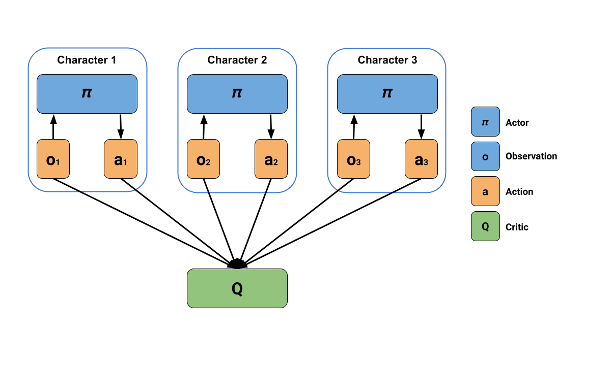

Multi-Agent Reinforcement Learning
Table of Contents
MARL Environment maybe:
- Cooperative (e.g. Robots in a warehouse that need to move things)
- Adversarial/Competitive (e.g. Agents playing tennis)
- Mixed (e.g. Agents playing football)
1. Approaches to MARL
1.1. Decentralized Approach/Independent Learning

Figure 1: Decentralized Approach for MARL
Pros:
- Simplified Design
Cons:
- Agents doesn't know state of other
- Environment is Non stationary And many RL algorithms can't reach global optimum with a non-stationary environment
- Solution may not converge because agents are updating at once and chasing each other's changes
- For identical agents, agents waste the experience collected by other agents
1.2. Centralized Approach

Figure 2: Centralized Approach for MARL
Pros:
- Environment is stationary
- Agents learn from collective experience
1.3. Self-Play
You need to train against equally matched opponents because
- if the opponent is too strong, you rarely win and don't learn much
- if the opponent is too weak, you overlearn useless behavior
Self-play uses former copies of itself as opponent.
Training against a set of slowly changing or unchanging adversaries with low diversity results in more _stable training. But a risk to overfit if the change is too slow. Hyperparmeters in Self-Play training:
- how often we change opponents
- number of opponents saved
- number of training steps before saving new opponent
In adversarial games tracking cumulative reward is not always meaningful, because it depends on the skill of opponent. Instead you can use ELO rating.
1.4. IACC - Independent Actor Centralized Critic
From: MA-POCA: sec. Centralized Training, Decentralized Execution
- IACC - Critic trained on joint information is used to update a set of independed actors in actor-critic architecture
- IAC - Independent Actor Critic (or the Decentralized Approach) doesn't perform well in tasks that require significant coordinateion because of partial observability
- JAC - Joint Actor Critic (or Centralized Approach) is
- not practical in real world scenarios as a joint policy needs access to all agent obsercation at once which presumes perfect communication between agents and policy node.
Also, JAC can have slower learning when the agents share behavior. Because more joint observations are required learn the same behavior for each agent. (Effective control of Rayleigh-Benart Convection - Invariant MARL)
Maybe the attention layer can be used to partly solve this problem because of permutaion invariance of attention layer:
`We hypothesize that the permutation invariance of attention gives MA-POCA an advantage as COMA’s value network needs to learn that any permutation of a joint observation has the same value`
2. Algorithms
2.1. MA-POCA: Multi-Agent POsthumous Credit Assignment
https://arxiv.org/pdf/2111.05992.pdf
- Agents act based only on their observation
- But uses a centralized critic, to evaluate how good it is in context of the whole group

Figure 3: MA-POCA
2.2. Graph Based Policy Learning
- By using a Graph Neural Agents, we can add nodes that represent the agents as they come and go
3. Libraries
4. Resources
- Eugene Vinitsky's Course: https://emerge-lab.github.io/multi-agent-learning/
- MARL Books: https://www.marl-book.com/, codebase (from @LukasSchaefer96)
- A First Introduction to Cooperative Multi-Agent Reinforcement Learning [arXiv] (from @SoloGen)
References
- https://www.youtube.com/watch?v=FOLMxWXazCo
- https://youtu.be/qgb0gyrpiGk
- https://huggingface.co/learn/deep-rl-course/unit7/introduction?fw=pt
- https://huggingface.co/learn/deep-rl-course/unit7/self-play?fw=pt